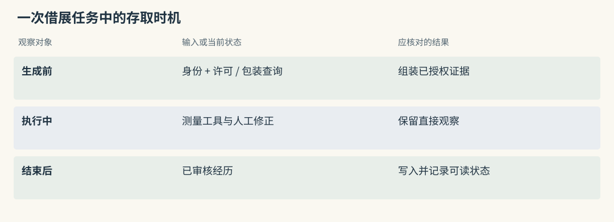
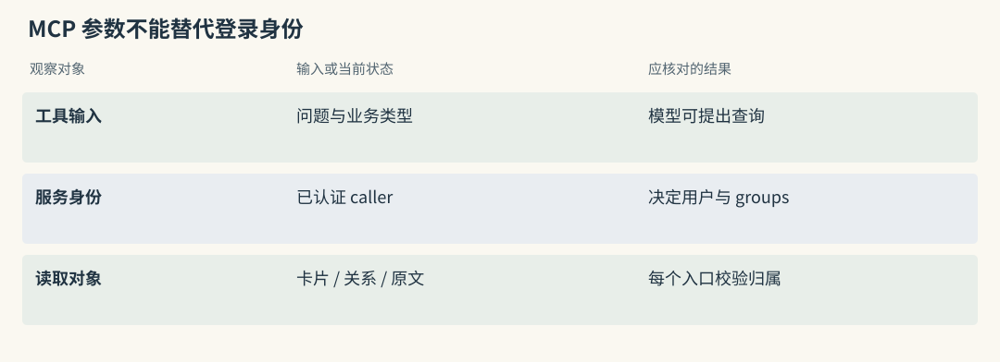
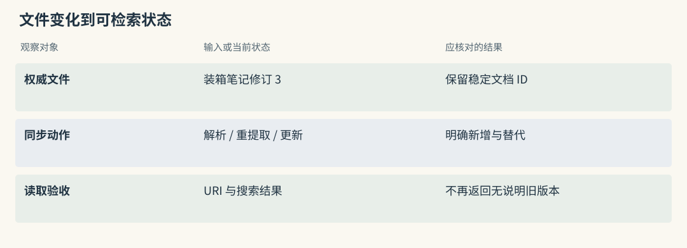
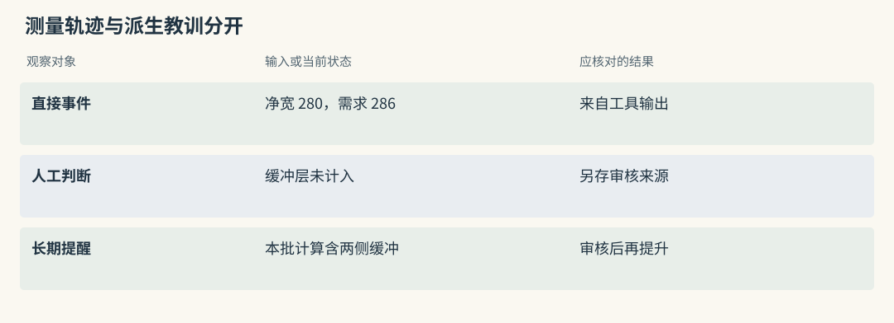
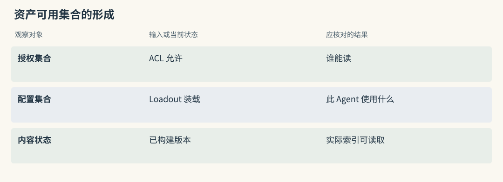
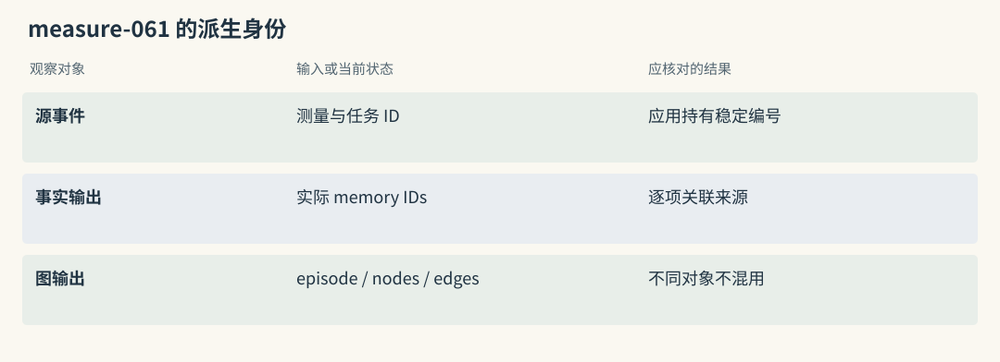
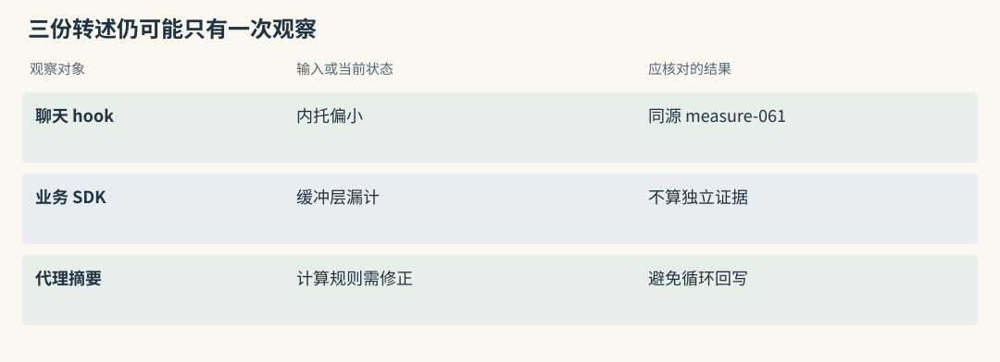
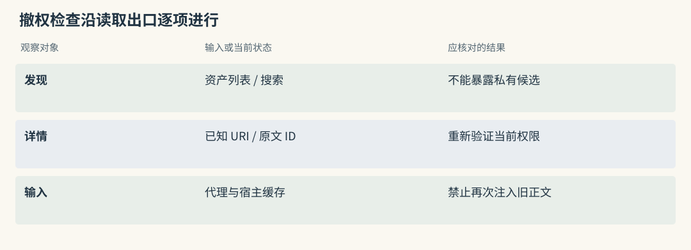
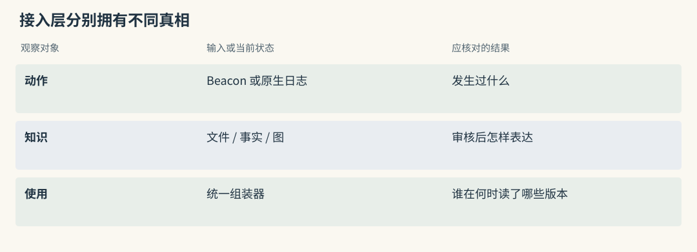

工程接入路线：MCP / 文件 / Trace / Team
代码已经会存和取，怎样让真实助手调用它
借展助手已经能保存内托提醒，也能按藏品查询。真正接入后，仍需回答几个调用问题：谁在清单生成前查资料，谁在装箱验证后保存经历，后台没处理完时如何提示，工具查询是否接受可信身份。
以一次教学任务为例：登记员申请借出执壶，助手查许可和包装要求，测量工具报告内托净宽不足，人工修正并复测。服务、文件、trace 与团队资产分别承担存取、可编辑来源、行动证据和可见范围，能够组合，但不应各自独立总结同一事件再重复注入。
接入完成的标志是下一次任务真的使用了可追溯资料，而不只是数据库中多了一条记录。
源码路径与适用范围（选读）

Mem0：生成前读取、生成后写入需要业务安排
生成清单前调用读取，把已审核的单位与包装要求交给模型；任务结束后，再将允许保留的输入或验证结果交 add()。也可暴露搜索工具，由 Agent 决定何时调用，两种方式需要不同的触发与漏调用测试。
SDK 不知道借展申请何时正式结束。宿主应记录调用时机、源事件与 packed IDs，避免保存成功但后续回答从未读取。
Graphiti：ingestion 与 query 服务可分开部署
馆内可让后台工作者处理 add_episode()，前台查询只在授权 group 内返回事实与来源。两条链可以分开部署，但要有处理完成状态，不能在新许可尚未建图时把旧关系冒充现行规则。
图返回候选之后，清单工具仍由宿主调度。服务化把边界变成网络请求，没有自动完成任务编排或近期纠正的可见性处理。
MCP Memory Service：让不同客户端叫到同一个服务
MCP 为客户端调用工具与资源规定消息协议，不规定“保存记忆”必须采用哪种提取算法。桌面客户端和巡展终端可以调用同一个 MCP Memory Service，在后端共享正文、标签、向量及全文索引。
存储工具接收材料，检索工具返回候选，客户端再将有限正文交给模型。客户端之间能共用服务，不代表它们应共享全部可读集合；每次调用都需要可信身份与权限映射。
网络失败时，普通说明可以暂时不使用个性化资料，私有读取则不能通过取消认证来降级。SDK 在业务进程中调用、MCP 经服务调用，改变的是运行边界，候选如何生成还要继续检查内部实现。
源码路径与适用范围（选读）

Mem0：工具封装不能让模型替用户挑 scope
工具参数可接受问题和允许的业务类型，user_id 应由认证会话确定。若模型提出读取另一登记员的材料，服务不应照传该身份给 Memory。
search 之外，按 ID 的 get、update、delete 也要校验对象归属。ID 难猜不能作为权限措施；之前合法得到的编号，在撤权后也不应继续可读。
Graphiti：MCP 的 group_ids 也是隔离参数
MCP server 应将 caller 映射到允许 groups，限定搜索、节点读取和 episode 全文回查。工具即使支持高级图查询，也不能默认开放任意 driver 操作。
协议格式相同不表示不同记忆服务的工具语义与数据可互换。Graphiti 的 fact、时间与来源要按其自身契约使用，不能只改服务地址就沿用另一套解析逻辑。
Basic Memory：把人能编辑的笔记作为原始资料
可以把人工审核后的装箱要求写入 qingyou-packing.md，再显式链接到缓冲材料笔记。Basic Memory 解析 Markdown 的 observations 与 relations，形成可搜索结构。人通过编辑器维护，Agent 可经工具读取或写入。
已知 memory:// URI 时，可直接定位笔记并限深展开关系；未知时先搜索。深度限制控制走几跳，最终 token 仍需另行预算，不能把两层邻域全部塞入消息。
文件是权威资料，索引可重建，但文件修改到索引更新之间有窗口。重命名、未解析链接和并发编辑都要测试。Git 保留旧版本便于审查，也意味着删除当前文件不能保证隐私正文已从历史和备份清除。
源码路径与适用范围（选读）

Mem0：文件可以是输入，数据库仍需同步策略
审核笔记可经 infer=False 保存为事实输入，metadata 记录稳定源 ID、文档版本与路径。修改文件后，需要应用选择 update、重新提取或版本替代，SDK 不会自动监听所有文件变化。
路径不是永久身份。笔记改名时若按新路径新增而未处理旧卡片，会出现重复规则；应以独立文档 ID 跟踪版本，再更新检索表示与关联。
Graphiti：文件版本可以各自成为来源 episode
文件修订可作为新的 episode，保留版本映射，让新关系与旧关系解析。旧 episode 表达当时收到的材料，不应因文件变更就悄悄改成新原文。
删除源文件时还需明确历史保留与派生治理。只取消文件搜索入口，图中的旧许可、摘要和来源引用仍可能被读到，必须沿实际路径检查。
Agent Beacon：把“做过什么”留成可以核对的时间线
测量工具报告净宽 280 毫米，装箱方案需要 286 毫米；助手调整内托后复测通过。若最终聊天只写“已处理”，下次无法判断改了哪里，或者验证究竟来自工具还是模型推测。
Beacon 按宿主能力使用 hook、插件、遥测或轮询，将活动归一为事件。session、run 与 tool-call ID 帮助连接请求、输出、文件变更和验证。fidelity 还能区分直接观察与推断，不能把未观测动作补成确定历史。
采集得到的是时间线，长期教训仍需提取与审核。可以从验证轨迹生成候选提醒，再写入笔记或事实库。命令参数、源码及工具输出可能含私密信息，采集与转发前都应限定内容和保留期。
源码路径与适用范围（选读）

Mem0：工具 trace 应先脱敏再形成事实
工具结果经脱敏后可交给 add() 形成候选事实，source ID 连回原事件。保存 role 或一段模型总结，不能证明实际执行顺序和根因。
“内托调整后复测通过”支持一次结果，不必然证明调整是唯一原因。应用应保留相关测量和审核报告，让派生教训可以被核验，而非让聊天自述成为唯一来源。
Graphiti：episode 序列可保存事件顺序线索
episode 序列和 saga 可以组织相关经历，但 observed、inferred 等证据等级需要采集器或应用保留到来源属性中。图抽取不会自动恢复宿主未报告的动作。
先发生调整、后出现合格结果，也可能受其他变化影响。因果关系作为派生判断应保留依据，不能把时间先后直接写成唯一因果边。
TencentDB：多人共享时，先决定谁能看到哪份资产
东馆与西馆共同参加巡展，各有陶瓷保管部与内部规程。共享一个后端可以降低重复部署，却必须明确谁能看哪份会话、Skill、Wiki 和 CodeGraph 资产。
TencentDB Agent Memory 用 ACL 描述可见性，用 Loadout 配置 Agent 可使用的资产。可以将二者理解为“有权访问”与“本次配置可用”的交集。Core 管会话与资产元信息，Knowledge 管文档或代码内容，Proxy 在模型请求前后接入。
代理改写上游请求地址可减少业务接入改动，仍需部署、身份验证和缓存治理。撤销共享许可后，旧资产摘要不应继续被注入。代码符号之间的调用关系也不等于团队成员之间的授权关系。
源码路径与适用范围（选读）

Mem0：user、agent、run 不等于完整团队 ACL
user、agent、run 有助于限定事实所属范围，但不能表达所有团队角色和共享政策。将长期项目知识全部放进临时 run 会影响跨任务复用；为方便共享去掉 user 又可能泄漏个人资料。
应先设计私有、项目和团队集合的授权规则，再构造 filters，并一致约束直接 ID 操作。metadata 中写“restricted”只是一条数据，不会自行执行访问控制。
Graphiti：group 是图分区，不是授权证明
group 可以分区，不能证明 caller 属于这个组。服务应先认证，再选允许分组，跨组查询有明确共享依据。
若不同机构的同名部门放在同一组，实体消歧负担也更大。分区设计应同时考虑建图语境与业务可见性，随后全文展开仍按相同权限验证。
把一次失败从工具输出交到下一次任务
一次内托测量失败先成为事件 measure-061，入口保留允许保存的数值、任务身份和时间。人工指出缓冲垫厚度未计入时，这是另一个来源，不应覆盖工具当时的直接观察。
提取器可生成“本批内托计算需包含两侧缓冲层”的候选，审核后进入项目笔记或事实存储，并保留与两个来源的映射。下次借展先读取要求，再调用当前测量工具验证，而不是把旧成功结果当作今天的实测。
若宿主已有完整日志，可以先利用原生事件，不必立即增加采集平台。跨多个 harness 需要归一格式时再考虑 Beacon，多客户端共用存取时再考虑服务。组件数量应由真实交接需要决定。
源码路径与适用范围（选读）

Mem0：为一次事件维护派生 memory IDs
源事件先由应用编号，再把 results 的实际 memory IDs 关联回它。重试时用源 ID 判断提取是否已完成，不靠相似正文猜重复。
下一次查询还应记录最终 packed IDs。这样能从“助手用了哪条内托规则”回到具体卡片及测量来源，纠正时也能准确定位派生对象。
Graphiti：保存 AddEpisodeResults 的实际身份
保存 AddEpisodeResults 中真实的 episode UUID，以及与原事件的映射；nodes 和 edges 标识的是不同派生对象。重复关系可能复用边 UUID，而新 episode 继续增加来源。
不能把事件、episode、节点和边混成一个编号。来源回查应经边的 episodes 到达原材料，新增事件数量也不等于新增事实数量。
多个入口同时写入时，怎样避免摘要套摘要
同一测量事件可能被聊天 hook、业务 SDK 和代理各总结一次。三个表述分别写“内托偏小”“缓冲层漏计”“装箱计算需修正”，hash 不同，却没有新增观察。如果彼此又把总结当成新材料，结论会越来越确定，来源越来越远。
应为原事件设置稳定身份，并规定谁拥有提取动作。同一事件可以生成事实、摘要和人审笔记，但每种视图都标明 derived_from 或外部映射，不应相互循环回写。
最终输入也要有统一预算视图。代理已注入高层装箱提醒时，宿主应知道其版本和来源，避免再全文注入相同内容。统一组装责任不要求只有一个数据库，只要求有人能够解释完整选择和去重。
源码路径与适用范围（选读）

Mem0：hash 去重不能识别跨摘要转述
不同转述的文本 hash 不同，局部去重未必识别共同源事件。源 ID 放进 metadata 仍需要应用执行幂等判断，不能假设 SDK 将所有转述自动归并。
可让一个入口负责事实生成，其他入口只传源引用或可读视图。需要重提取时使用新的处理版本，保留与旧结果的替代关系，而不是无限追加近义摘要。
Graphiti：多个 episode 不一定是多份独立证据
多份摘要可能解析为同一边并增加 episodes，但来源数量增加不代表独立观察增加。若三份材料均来自 measure-061，应保留共同祖先。
摘要套摘要还可能删掉“仅本批箱体”的条件。对长期规则，应尽量从原始工具结果与审核依据形成，不把重复支持数量当作真实性分数。
权限撤销，要沿着实际读取路径走
周岚原来可读巡展共享操作 Skill，调岗后权限撤销。应检查资产列表、已知 URI、内容服务、代理注入缓存与后续会话，不只看管理面板显示不可见。
已进入模型输入的文字不会因 ACL 改变自动消失。后续请求要按政策停止重注入失去授权的内容，并处理已有会话状态；已展示给人的信息无法撤回，所以共享前的最小权限仍不可省。
可以从一次回答反向追：输入片段来自哪个资产版本，候选由哪个服务返回，身份在哪验证，详情从哪里读出。沿这些路径分别做拒绝测试，才能证明撤权覆盖完整访问链。
源码路径与适用范围（选读）

Mem0：撤销后要覆盖搜索与按 ID 读取
搜索 filters 无法清掉应用已缓存的 MemoryItem 或固定 ID。撤权时应使调用者的注入缓存失效，并让 get、update、delete 重新校验当前归属。
不要只观察最终回答未展示秘密。服务若先读取了私有正文再让模型过滤，已经越过了读取边界，日志和缓存还可能保存内容。
Graphiti：关系与来源全文都要经过授权
关系结果限定 group 后，按 episode UUID 回查原文还要验证来源权限。节点查询、中心距离和高级图工具也应通过授权包装。
缓存应绑定可见组与权限版本。资产撤销或关系变更后，下一轮输入不能复用旧 fact、summary 或来源全文，后台任务完成状态也应可见。
动手检查
画出“测量报告到下一次装箱”的实际路径，给每个箭头标注 payload、源 ID 与负责组件。圈出最终决定正文、来源和 token 预算的位置。
再假设登记员失去巡展权限，逐项找出需要失效的缓存。若任何接口只凭旧 ID 就可取全文，说明接入仍有绕过点。答案提示：原报告、索引、候选补取及旧 ID 回查都须服从当前允许集合；组装器应将带来源的正文限制在同一预算内。登记员撤权后，固定引用和已缓存的注入内容也应失效。候选判别工具不能替代授权，也不能代替保存原事件。
实现细节与复查入口（选读）
MCP Memory Service：统一存取与运维边界
MCP Memory Service 通过 MCP、REST、CLI 和管理界面暴露统一存取。SQLite、Cloudflare hybrid、Milvus 等后端可能有不同部署与查询能力，必须按实际配置验收。
同一个服务减少客户端各建一套库的重复工作，但远程监听、认证、同步和日志成为新的责任。选择它主要是为了共享接口和运维边界，而非仅凭 MCP 名称判断检索优劣。
保存一条记忆的路径
调用方提交正文、类型、tags 与 metadata，服务生成内容标识和 embedding，再写正文及索引。SQLite 路径使用全文 FTS5 与本地向量访问，直接 store 不等于模型已判断内容有长期价值。
启用本地 ONNX embedding 可以减少这一环节的云请求，远程 MCP、备份与同步仍可能复制正文。应列出所有出口，并让源事件编号进入 metadata，以便回查与删除。
混合检索是如何实现的
hybrid.py 的 retrieve_hybrid() 并行运行 BM25 与向量查询，每路扩大候选，再按内容 hash 合并。只在全文路出现的记录还需补取正文，因此它具有独立候选并集行为。
weighted 路径处理分值后加权，RRF 则按名次累计并可附共识奖励。两者都没有像 cross-encoder 那样重新逐对理解问题与文本。中文分词、编号、短语与 query 清理会影响全文结果，应单独测试。
每路过滤与补取条件也必须一致。不同 fusion method 可能走不同分支，不能从“混合”名称推定租户、日期和 superseded 条件全部已经覆盖。
consolidation 与普通清理的区别
consolidator.py 按配置组织衰减、关联发现、聚类、压缩和受控遗忘。daily、weekly 等 horizon 限制时间窗口，incremental 依据游标推进。
这些动作可能生成新摘要或改变可见性，应保留报告、保护规则和来源。Cloudflare hybrid 指本地与远端协作，与 BM25/vector hybrid 不是同一概念；巩固涉及同步暂停和恢复时，还需监控跨节点状态与删除传播。
接入与安全
OAuth 验证调用者，scope 和 tags 等影响后续访问，但可由客户端任填的标签不能当身份。REST、Dashboard、文件工具与远程 MCP 都应限制监听和权限，已有 TLS 修复也不代表任何默认配置都适合公网。
在馆内目标部署测 store、空结果、批量读取、embedding 升级与删除恢复。项目 README 的低延迟结果只适用于其配置，不应当作实际网络和模型组合的承诺。
Basic Memory：从 Markdown 重建知识图
Basic Memory 将 Markdown 作为可编辑的权威材料，数据库主要承担解析与索引。人审经验、共享手册与显式笔记比较适合这种工作流，它不默认判断每轮聊天哪些内容值得永久保存。
采用前需明确文件变更、索引同步、并发冲突和历史保留责任。可读文本便于迁移，不意味着权限、隐私与许可证问题随之消失。
一份笔记如何成为图
下面是笔记格式示意，字段类别与语法需以当前 parser 为准，示例不声称已经导入 Basic Memory。
# 青釉执壶装箱
## 观察（Observations）
- [constraint] 内托净宽包含两侧缓冲垫，每侧 12 毫米
- [source] 依据经审核的装箱计算单 CR-208
## 关系（Relations）
- relates_to [[缓冲材料规格]]entity_parser.py 解析实体、observations 和关系，链接解析器将目标名称或路径映射到笔记身份。同步完成后，文件编辑才反映到搜索。
若缓冲材料笔记改名，应核对旧链接是否解析到正确对象。文件存在、索引有条目与链接已解析是三个不同状态，不能用其中一个替代其余检查。
搜索与 build_context 做了不同工作
搜索用于定位笔记；context_service.py 的 build_context() 从 URI、路径模式或查询取得 primary results，再收集观察与关系邻域。depth、limit、max_related 和时间条件约束不同维度。
已知执壶装箱笔记 URI 时，直接取它比重新做语义搜索更确定，随后可读缓冲材料笔记。但链接只说明可发现关系，仍需核对规格版本和本批适用性。
文件真相的好处与限制
空索引可从保留文件重新解析，便于审核、备份与导出。重建不能恢复未备份的文件，也不恢复所有外部任务状态，必要配置与同步身份仍要保存。
普通 Git 会保留旧正文，删当前文件后历史、远端与备份可能仍含个人信息。并发编辑还需冲突策略，不能让两个 Agent 无审核重写同一许可规则。AGPL-3.0 的服务与分发义务应单独评估，文本可迁移不免除合规责任。
Agent Beacon：先把行动变成有来源的事件
Beacon 关注宿主活动的采集与关联。不同 harness 暴露 hook、插件、OTLP 或 session store 的能力不同，项目采用对应方式归一事件，而非要求所有客户端修改成同一运行时。
馆内先列目标动作：工具开始、输出、文件修改、批准与验证。逐项检查是否直接采到，缺失部分明确标注，不要从支持某个客户端推断它能够观测所有动作。
原始活动如何归一
架构说明将流程拆为 collect、normalize、store、correlate、detect。活动经宿主适配进入统一事件，落到 runtime.jsonl，再凭 run、session 与 tool-call 关联时间线，供检测与人工审查。
harness.collection_method 说明采集方式，event.fidelity 区分 observed 与 inferred。多通道可能重复采集同一次工具调用，应依事件身份去重，同时测试目标宿主实际覆盖。
JSONL 是稳定交接资料，轮转与保留策略需配置。CI、cloud 或转发路径可能上传快照，默认本地优先不能扩大成所有通道永不外发。
为什么 trace 比聊天更有用
时间线可把“净宽不足、调整垫层、复测合格”连起来，让审核者看见实际动作与结果。最终聊天“问题解决”无法提供同等依据，也可能只是未经验证的自述。
提炼长期提醒仍需显式处理：选取可复用条件、保留源事件、审核后写入知识或 Skill。采集覆盖高不等于教训正确率高，Beacon 不替代事实抽取、时间图或生命周期管理。
它不观察什么
它不等于通用 shell 历史、内核监控、所有 SaaS 审计或任意网页采集。支持许多 harness 也不代表每个都有相同 fidelity，不能为缺失动作补上臆测。
prompt、源码和命令输出可能含凭据，入口脱敏、访问权限和保留期应覆盖本地日志及转发目标。OSS 事件交接与托管平台的 SSO、fleet governance 等交付范围分开核对，轮转也不是完整用户删除保证。
TencentDB Agent Memory：团队可见的上下文资产
TencentDB 的 Core、Knowledge、Proxy 与 Panel 分工覆盖会话、知识内容、请求接入与管理。它适合多 Agent 共享资产治理，不是一个安装后无需其他服务的向量 SDK。
对借展系统，要分别画出会话数据和共享规程的保存位置，以及代理如何发现授权资产。服务地址、构建状态与版本回调同样影响实际可读内容。
L0 到 L3 各保存什么
L0 保留原始对话，L1 抽取原子陈述，L2 形成场景归纳，L3 组织稳定 core。可用本次测量模拟四种粒度：L0 是工具和讨论，L1 是本批缓冲层遗漏，L2 是装箱计算约束，L3 是经认可的工作原则。
一次事件不必产出所有层，更不能直接把未核验猜测升为团队原则。自定义 prompt 的绑定优先级包括 Agent、Team、Instance 与默认配置，调整关注点不应破坏固定输出协议。
生成日志保留 prompt ID、版本、hash 和输入输出引用，帮助追查错误来自哪套提示；若不保存提示正文快照，复现还需按版本管理配置本身。
Team、ACL 和 Loadout 怎么参与检索
ACL 与 Loadout 限制 Agent 可用资产，资产还带归属、版本与构建状态。v3 数据面中的 team、agent、user 是隔离键，服务仍需验证它们与 caller 的关系。
Core standalone 可用 SQLite 和本地文件，远程 embedding 关闭时可走 BM25。Knowledge 服务负责 Wiki 或 CodeGraph 的实际内容，Core 登记元信息和地址。资产登记成功不能证明内容已经建好或可用。
Wiki 与 CodeGraph 怎样组织知识
Wiki 管线把上传或拉取文档组织成结构化页面、链接、FTS5 和知识索引。Agent 先发现页面再读取细节，页面必须保留出处，不能替代原规程。提取错误与版本过时都会影响许可答案。
CodeGraph 从 git 仓库构建文件、符号和调用结构，适合找定义与影响范围。静态调用存在不保证运行时一定执行，动态调用和语言支持需要按实际仓库测试。
可选 Auto-Sync 默认关闭，开启后以队列和 worker 拉取更新并重建。callback 把构建状态传到管理面，断链可能造成元信息与索引不一致。/v3/tools/list、/v3/tools/call 的内容访问也必须延续管理面的授权。
Proxy 如何在生成前后接入
Proxy 接收兼容上游协议的请求，验证身份并初始化相关任务，注入适用上下文后转发，结束后回流 L0 或 Skill 会话材料。代理不保存记忆本体，但维护会话和注入状态，这些缓存也要受撤权约束。
高层上下文可注入，L0、L1 详情通过工具读取；Skill 摘要用于发现，完整步骤按需获取。这样减少每轮大改前缀，不表示所有层每次都进入 prompt，也不等于可导出模型 KV。
不同说明中的层级简称可能有差别，应核对实际 schema 与代码。“改 endpoint 接入”描述业务改动小，不免除服务部署、认证、上游配置与故障回退工作。
组合时只允许一个最终上下文入口
可以由 Beacon 保存动作，Basic 维护人审笔记，结构化服务建立索引，再由一个组装器选择来源与控制输入预算。每层保留 owner、源 ID 和版本，原始观察不被摘要覆盖。
多个 hook 若分别提取、注入并互相回写，会增加重复 token 和删除难度。接入前先规定写入责任、幂等键、最终读取出口及删除传播，不必为了组合而组合。
四种接入之外：SDK、图服务与宿主插件
Mem0 的 SDK 调用把身份与组装留在业务层；Graphiti 的 Python、MCP 或 FastAPI 仍遵循 episode 写入与图查询；Cognee 的服务入口仍需 loader、schema 与 route 配置。MCP 相同只意味着传输兼容，不证明数据模型可互换。
Hippo 与 MemOS 的 hooks 或插件可以接宿主生命周期，研究库则更多需要外围服务化。Letta 自己管理 core 和 recall，外接服务应避免重复捕获。
文件角色也要区分：Basic 的 Markdown 是权威源，Letta MemFS 有提交与编译协议，Hippo mirror 遵循镜像约定，Beacon JSONL 是事件交接。Hermes 只处理已有候选，不能为这些来源提供长期后端。
一次会话接入应该保存哪几个 ID
一次请求至少关联 caller、session、源事件、派生对象与版本。tool-call ID 解释动作，episode UUID 解释来源，笔记 permalink 解释文件身份，asset version 解释共享状态，Letta commit 解释后续上下文版本。
若周岚的测量经历被审核为团队 Skill，其他 Agent 使用时应能从 packed 版本追到脱敏源事件。删除源或撤销共享时，也要知道哪些派生内容受影响。一个 session 名称不能替代这些映射。

横向查阅表（选读）
本章对照结论
| 组件 | 交付边界 | 组合时不能省的工作 |
|---|---|---|
| MCP Memory Service | 统一存储与检索接口 | 传输认证、每路过滤、同步删除 |
| Basic Memory | 可编辑文件与重建索引 | 稳定文件身份、同步与历史治理 |
| Agent Beacon | 统一工具活动与时间线 | 覆盖核对、证据等级、脱敏 |
| TencentDB | 多层会话与团队资产服务 | 版本、ACL、回调和代理缓存 |
| Mem0 | 业务内的事实 SDK | 源映射、授权和最终组装 |
| Graphiti | episode 与关系服务 | 模型、driver、时间和全文权限 |
| Cognee | 多类输入的知识管线 | 路由、后台恢复与跨存储一致 |
| Hippo、MemOS | 本地或宿主生命周期接入 | 重复捕获、反馈、队列和资源兼容 |
| Letta Code | 自管上下文的运行时 | 外接资料与 core 不重复 |
| MemoryOS、A-MEM | 分层或笔记演化库 | 持久化、并发、安全包装 |
| HippoRAG | 文档索引与关联检索 | 在线调度、租户治理、删除 |
| Hermes Jev Skills | 候选小决策 | 外发政策、ID 映射与预算 |
| 历史 Letta | 归档协议与论文入口 | 只用于历史复现，不作当前接入依据 |